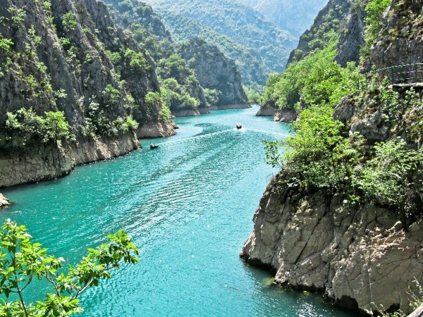
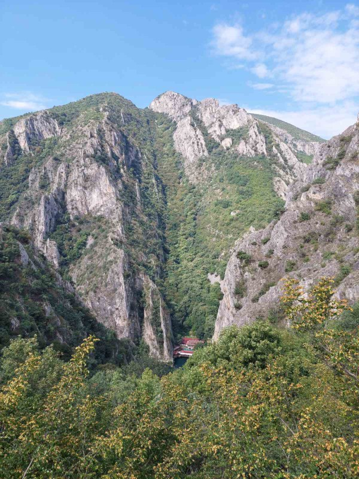
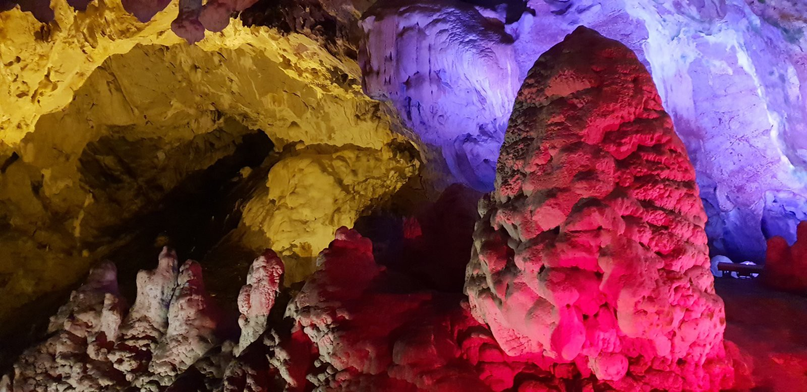
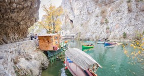

As part of the symposium, optional technical visit of Ljubljanska Bridge and excursion to Matka Canyon are planned for September 30th.
Excursion to Matka Canyon
The most recognizable landmark of Skopje
Matka Canyon is a beautiful piece of untouched nature with rare animal species and endemic plants, only 15 kilometers from the capital Skopje, something that not every country in the world can boast of. By damming the Treska River (right tributary of the Vardar River) and the construction of an arch-reinforced concrete dam, the artificial reservoir Matka was created. It is the oldest artificial lake in North Macedonia, formed in 1938. The water temperature in Lake Matka is consistently 7 to 9 degrees Celsius, and the air temperature in summer is about 9 degrees lower than that in the city. Today, water from the lake, apart from generating electricity, is used for irrigation, kayaking, swimming, diving and other tourist-recreational purposes.


The deepest underwater cave in Europe
Matka has many tourist attractions, and one of the most visited places in Matka are the unique surrounding caves. The caves abound with unique forms of stalactites and stalagmites. The most visited is the Vrelo cave, which consists of two caves - underwater and above water. It is one of the deepest underwater caves in Europe and the world. The underwater cave consists of three halls known as the Concert Hall, the Hall of Stalactites, and the Hall of Lakes. In the depth of the cave, there are two emerald-colored cave lakes above which hang a large number of stalactites. In the cave itself, there are many cave decorations, among which the massive stalagmite in the form of a cone dominates, which has been settling for 2,700 years. Apart from Vrelo, Ubava and Krshtalna caves also stand out here with their beauty.


Monument of nature
A variety of flora and fauna can be found at the Matka. Recently, two new species of spiders and five false scorpions have been discovered. 119 species of diurnal and 140 species of nocturnal butterflies have been registered in the Matka canyon. Namely, 77 species of Balkan endemic small butterflies live here, and 18 other species are new to science. Unfortunately, these butterflies usually end up as part of the collections of many collectors who think that this is how they extend their short lives.
Mala Sveta Gora
Apart from a great wealth of natural rarities, this location also abounds with a large number of cultural and historical monuments, mainly monasteries, for which reason they call it a small Holy Mountain. The reason for the construction of a large number of medieval monasteries in this area is mainly the safety offered by the difficult-to-access terrain in the past. Unfortunately, not all monasteries have been preserved, but most of them are in excellent condition. The most famous are the "Dormition of the Holly Mother of God" Monastery, the "St. Nikola Shishevski" Monastery, the "St. Andrea" Church, the "St. Spas" Church, and the "St. Nedela" Church. Above the canyon itself there is an archaeological site known as Markov grad, a medieval settlement-fortress from the 14th century, in which there are remains of several churches. There is also a locality called Markova noga, which is connected with the legends of Krali Marko.


The heart of alpinism
For lovers of more extreme sports, Matka has opportunities for sport climbing and alpinism. Among other things, Matka is also the heart of alpinism in North Macedonia and it is the place from where begins the history of alpinism in our country. Also, there is the Kayak Center which hosted the First World Whitewater Kayak Championships in 1975 and the European Championships in 2004.
Tourist attraction
Matka is a perfect destination and a great escape from everyday routine activities. You can spend a weekend full of different activities: hiking, mountain climbing, canoeing, speleology, visiting medieval monasteries with picturesque frescoes, watching birds (especially bald eagles) and rare species of butterflies, as well as tasting delicious food in restaurants, enjoying the view of the canyon.


Technical visit of Ljubljanska bridge
The bridge over the river Vardar at Ljubljanska Street in Skopje is part of the project for connecting the bul. Ilinden with Slovenecka Street in municipality of Karpos. The owner is city of Skopje, the project holder is GEING doo Skopje and the main contractor is GRANIT AD Skopje. The bridge construction has started in July 2022.
It is designed as “extradosed” which is a hybrid type between conventional girder and cable-stayed bridge. The total length of the bridge is 111m distributed over three spans 27.5+56+27.5m. The width of 24.1m includes four traffic lanes, two pedestrian and two cyclic paths.
The superstructure of the bridge represents a ribbed deck supported from above by parallel stay cables which layout is arranged as vertical twin plane system. The deck is comprised of two post-tensioned main girders, cross girders and reinforced concrete deck slab. On one part of the end spans, the depth of the slab is multiple times increased and acts as a counterweight. Doing so, the appearance of negative reactions at the end supports is avoided. The pylons are located above each bearing at the intermediate supports. They are designed as reinforced concrete with a total height of 12.6m above the deck. Due to the limited width of the pylons’ cross section, the anchoring and transition of the stay cables through them were designed by the means of so-called saddles. The pier consists of two independent parts, each with rectangular cross section rotated for 45 degrees in the base. For all supports, a deep foundation on piles was chosen.


The superstructure is supported by 12 LRB (Lead Rubber Bearing) isolators. They reduce the seismic force acting on the structure by increasing the period of oscilation and allowing greater horizontal displacements of the superstructure. LRB isolators are similar to regular reinforced elastomeric bearings, but with high damping (30%) owning to the lead core placed in their middle part.

The stay cable system consists of 32 parallel cables, each composed of 31 strands. Passing through the saddle, they are anchored on both sides in the main girders at the intersection with the cross girders.
The addopted expansion joints are type Wd/Wd+230 at carriageway and type PL230 at sidewalks (Freyssinet). The waterproofing for the horizontal surfaces of the bridge is based on meta methyl acrylate (MMA). In order to protect the pylons and the stay cables from accidental action of the vehicles, a New Jersey railing was provided on both sides between the carriageway and sidewalks.
A cast-in-place construction of superstructure was foreseen in the design with a use of scaffolding capable of spanning the minor riverbed. Due to the construction method itself, in the analysis of costruction phases a gradual activation of superstructure’s self-weight during the post-tensioning process was taken into account.
The complete design of the bridge was done in accordance with Eurocodes and respecting the fib and PTI recommendations for extradosed type of bridges. The numerical analysis was carried out in the FEM software SOFiSTiK and additional auxiliary software.